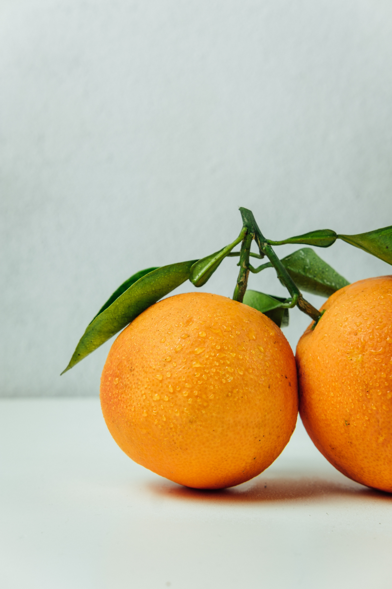

오렌지는 감귤류에 속하는 열매로,
모양이 둥글고 주황빛이며 껍질이 두껍고 과즙이 많다. 인도 원산으로서 히말라야를 거쳐 중국으로 전해져 중국 품종이 되었고,
15세기에 포르투갈로 들어가 발렌시아 오렌지로 퍼져나갔다.
브라질에 전해진 것은 아메리카 대륙으로 퍼져나가 네이블오렌지가 되었다.
세계 최대 오렌지 생산국은 브라질이며, 미국, 중국, 브라질, 에스파냐, 멕시코 등에서 생산한다.
성분으로는 당분이 7~11%, 산이 0.7~1.2% 함유되어 있으며,
날로 먹거나 주스,
마멀레이드
를 만들어 먹는다.
